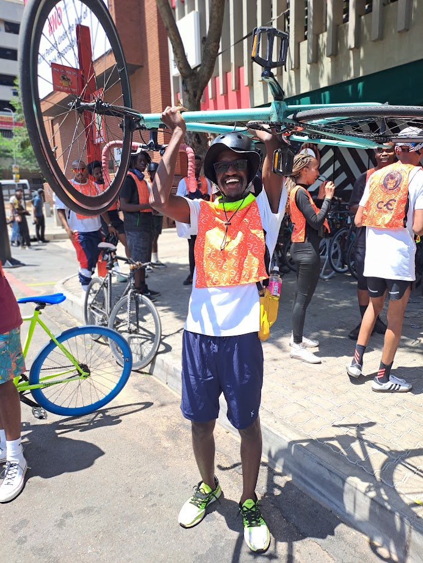

Keleabetse Mookeletsi
Infrastructure Support

Profile
A highly motivated and results-oriented Technical Support Specialist with 2+ years of experience gained through the "University of YouTube." A quick learner who seamlessly adapts to evolving technologies and IT processes.
Detail-oriented and efficient, I strive for organization in all aspects of my work. I possess a strong customer service background, demonstrating a keen ability to understand and address customer concerns with empathy and professionalism.
I am currently diligently pursuing a comprehensive education in the field of Information Technology. My studies encompass a wide range of crucial areas, including foundational IT knowledge through the prestigious CompTIA A+ and N+ certifications. I am also deeply engaged in exploring the dynamic and ever-evolving domain of Cybersecurity, focusing on understanding and mitigating threats to information systems and networks.
Outside of my studies, I am passionate about web design and cycling, both of which provide me with opportunities for creativity, problem-solving, and staying active.

Work Experience
Junior Infrastructure Support
Kganya Insurance Administrators, Lynnwood Pretoria | Sept 2022-Present
- Deep understanding of various hardware components (PCs, laptops, peripherals) and their functionality.
- Expertise in troubleshooting and resolving hardware-related issues.
- Proficient in supporting and maintaining a diverse range of mobile devices (smartphones, tablets) across different operating systems (iOS, Android).
- In-depth knowledge of Microsoft Office Suite applications (Word, Excel, PowerPoint, Outlook) and their advanced features.
- Expertise in managing and administering O365 tenants, including user provisioning, licensing, and security settings.
- Skilled in implementing and managing meeting room technology, including scheduling, audiovisual equipment, and integration with Microsoft Teams.
- Expertise in printer management, including driver installation, troubleshooting, and network configuration.
- Knowledge of network and Wi-Fi management, including troubleshooting connectivity issues, configuring network settings, and ensuring network security.
Call Centre Team Leader
Kganya Insurance Administrators, Lynnwood Pretoria | Mar 2020-Aug 2022
- Proactively forecast call volumes and resource requirements for both inbound and outbound teams.
- Optimize agent schedules and allocate resources effectively to meet fluctuating demand.
- Set realistic and achievable deadlines for teams based on forecasted workload.
- Serve as the first point of contact for customer inquiries, escalations, and complaints.
- Actively listen to customer concerns, empathize with their situations, and strive for prompt resolution.
- De-escalate tense situations effectively and maintain a professional and courteous demeanor.
- Collaborate with relevant departments to ensure timely and accurate resolution of complex issues.
- Meet all data sanitization deadlines while maintaining data integrity.
- Manage the call center help desk, ensuring efficient routing and assignment of incoming calls and queries.
- Maintain accurate records of all incoming calls and inquiries for future reference and analysis.
Contact